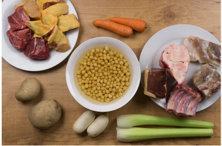
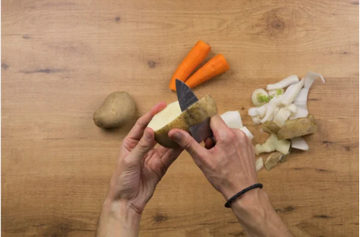
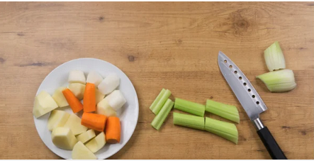
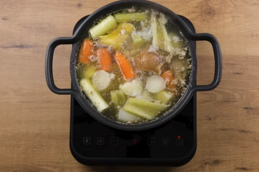
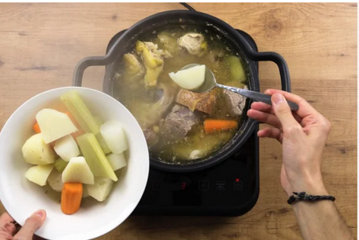
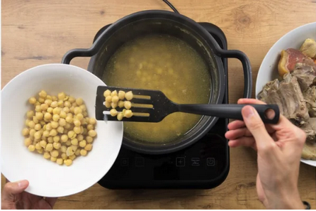
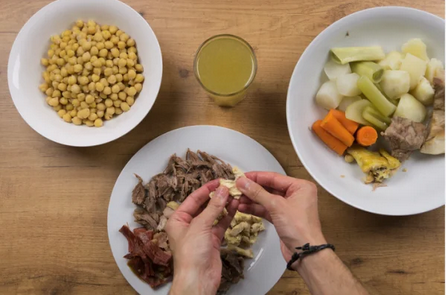
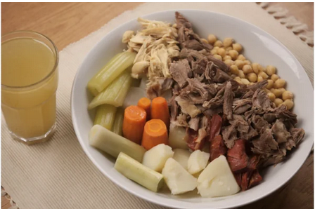

Volver
Plato 2 (Puchero andaluz)
Índice de contenidos
Ingredientes
Paso a paso
Resultado final
Ingredientes
400 g. de garbanzos
2 zanahorias
2 patatas
2 ramas de apio
2 nabos
1/2 pollo
1/4 de kg. de carne de ternera
1 hueso de espinazo salado
1 trozo de costilla
1 trozo de tocino mediano o pequeño
1 trozo de jamón
1 hueso blanco
1 puerro
Sal (si fuese necesario)
4 l. agua
Para el caldo del puchero: Opcional (fideos o arroz), hierbabuena fresca, pan blanco y un chorrito de limón.
Paso a paso
Lavamos y pelamos las patatas, las zanahorias, los nabos y las ramas de apio. Lavamos el puerro, le cortamos la parte más verde y lo troceamos.

Ponemos al fuego una olla suficientemente grande con abundante agua y cuando está caliente añadimos los garbanzos.
Mucha gente para hacerlo más rápido lo suelen hacer en olla rápida, pero a mi gusta a la vieja usanza, a fuego lento.
Aunque lleve más tiempo me parece que queda mejor.

Incorporamos en primer lugar la carne con hueso, y después el resto de “avíos”, incluido el tocino.
Añadimos también todas las verduras.
Cocemos durante 10 minutos a fuego fuerte y tiramos todo el agua que llevará todas las impurezas y exceso de sal.
Es un buen consejo para que el caldo quede más ligero y suave.

Volvemos a llenar de agua y cocemos todo junto a fuego medio o alto, retirando la espuma que se forma con una cuchara o una espumadera.

Retiramos las verduras una vez que están hechas y dejamos al fuego la carne y los garbanzos.

Casi al final ajustamos de sal si hiciese falta, al llevar el hueso le da el toque de sal necesario.
Pero si lo necesita, rectificamos de sal, siempre al gusto.
Cuando los garbanzos y la carne están hechos los retiramos a un plato y una fuente por separado.
Tiramos los huesos. Colamos el caldo y lo reservamos.

Si ves que evapora mucho el caldo del puchero añadimos más agua. Y el tema de la espuma, deberás de retirarla de vez en cuando.

Una vez que la carne se ha enfriado un poco, la desmenuzamos con las manos y reservamos.

Resultado final

Volver al inicio de la página